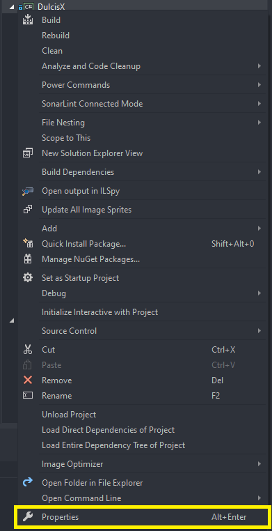
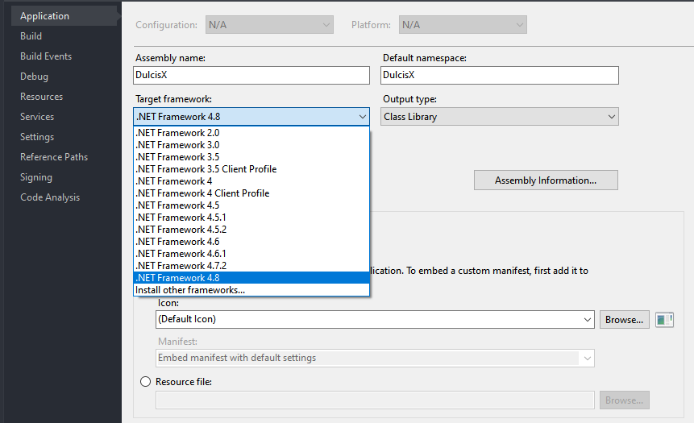
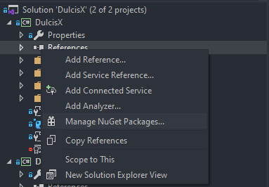
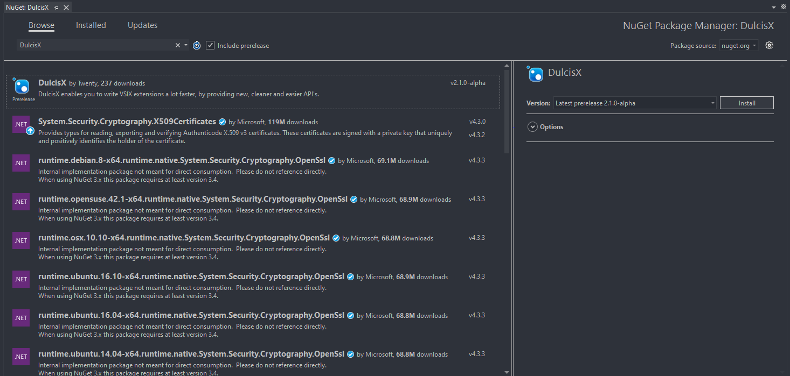

DulcisX Installation
DulcisX targets .Net Framework 4.8, that means that all projects which use this package need to target .Net Framework 4.8 as well. Unfortunately the VSIX Project template targets .Net Framework 4.7.2, therefor you will need to change that.
Right click the Project file and click on 'Properties'

Select the 'Application' tab
Change the 'Target Framework' to .Net Framework 4.7.2. If you don't see that option, you can install it from here.

Open the .csproj file
Change <TargetFrameworkVersion>v4.7.2</TargetFrameworkVersion> to <TargetFrameworkVersion>v4.8</TargetFrameworkVersion>
Save
<!-- The following content might differ to yours. -->
<?xml version="1.0" encoding="utf-8"?>
<Project ToolsVersion="15.0" xmlns="http://schemas.microsoft.com/developer/msbuild/2003">
<!--...-->
<PropertyGroup>
<Configuration Condition=" '$(Configuration)' == '' ">Debug</Configuration>
<Platform Condition=" '$(Platform)' == '' ">AnyCPU</Platform>
<SchemaVersion>2.0</SchemaVersion>
<ProjectTypeGuids><!--Your Guid--></ProjectTypeGuids>
<ProjectGuid><!--Your Guid--></ProjectGuid>
<OutputType>Library</OutputType>
<AppDesignerFolder>Properties</AppDesignerFolder>
<RootNamespace><!--Your Name--></RootNamespace>
<AssemblyName><!--Your Name--></AssemblyName>
<!--Change this:-->
<TargetFrameworkVersion>v4.7.2</TargetFrameworkVersion>
<!--To This:-->
<TargetFrameworkVersion>v4.8</TargetFrameworkVersion>
<GeneratePkgDefFile>true</GeneratePkgDefFile>
<UseCodebase>true</UseCodebase>
<IncludeAssemblyInVSIXContainer>true</IncludeAssemblyInVSIXContainer>
<IncludeDebugSymbolsInVSIXContainer>false</IncludeDebugSymbolsInVSIXContainer>
<IncludeDebugSymbolsInLocalVSIXDeployment>false</IncludeDebugSymbolsInLocalVSIXDeployment>
<CopyBuildOutputToOutputDirectory>true</CopyBuildOutputToOutputDirectory>
<CopyOutputSymbolsToOutputDirectory>true</CopyOutputSymbolsToOutputDirectory>
<StartAction>Program</StartAction>
<StartProgram Condition="'$(DevEnvDir)' != ''">$(DevEnvDir)devenv.exe</StartProgram>
<StartArguments>/rootsuffix Exp</StartArguments>
</PropertyGroup>
<!--...-->
</Project>
Installation from NuGet
Right click on 'References', and select 'Manage NuGet packages'

Check the 'include prerelease' checkbox
In the "Browse" tab, search for DulcisX
Click install.

- Click on 'Tools', 'Nuget Package Manager' and 'Package Manager Console'
- Enter
Install-Package DulcisX